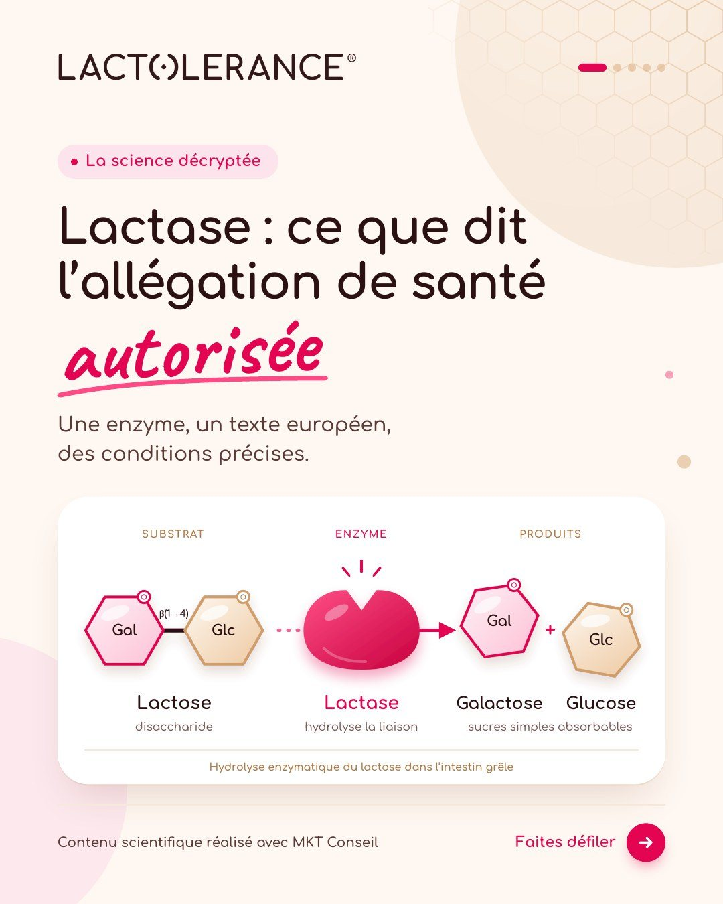
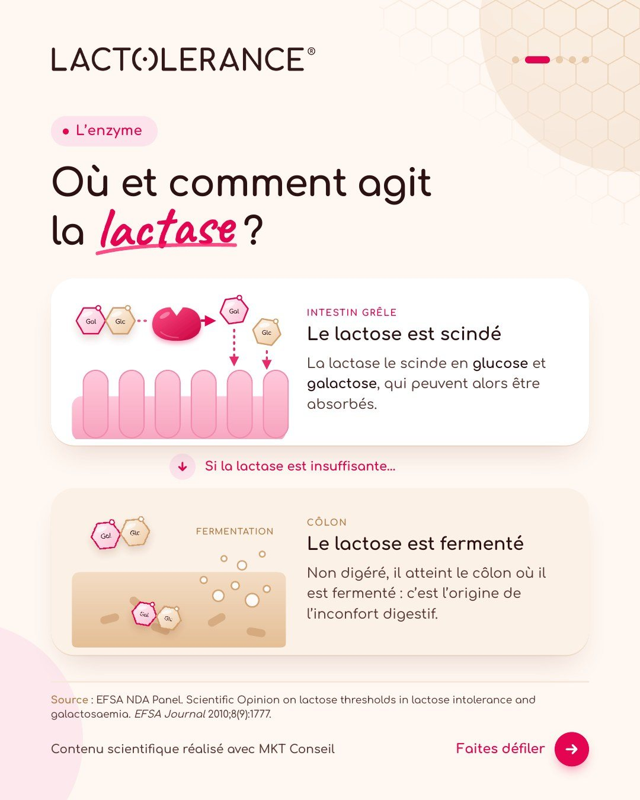
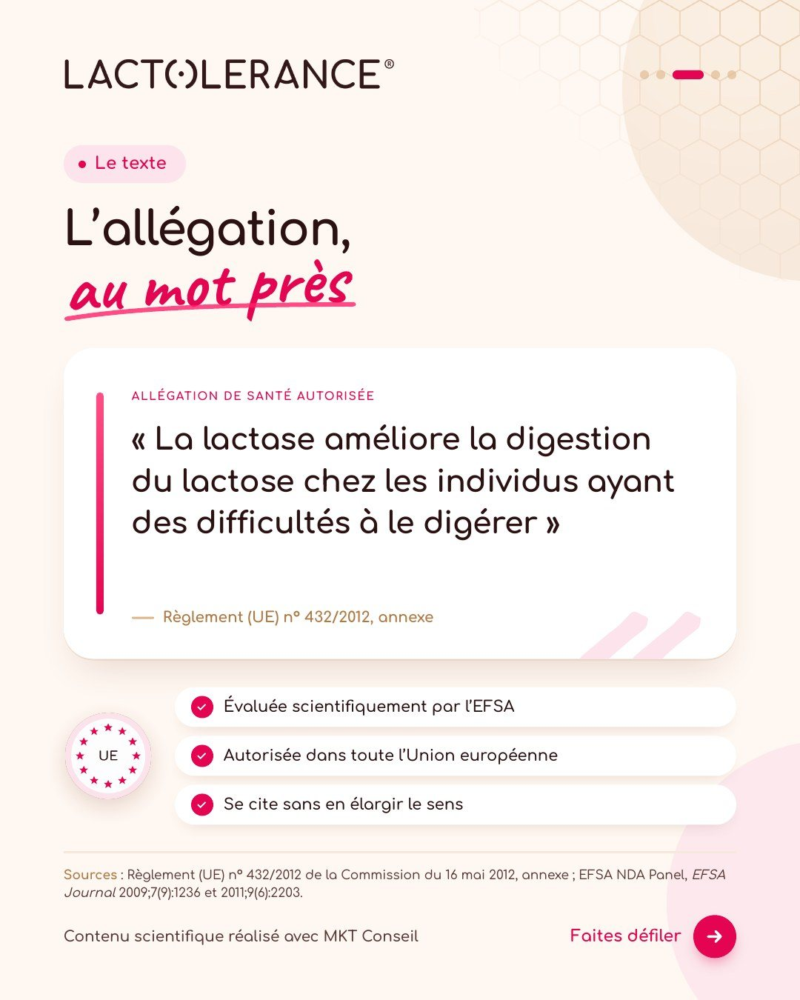
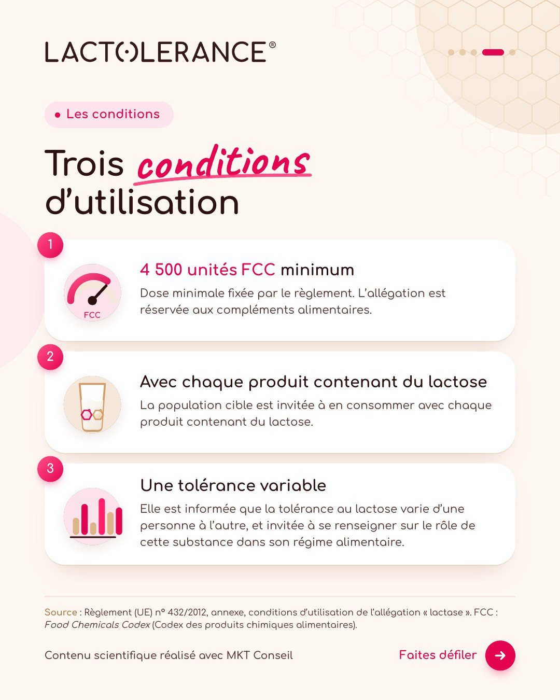

LactoléranceMaquette · non publié
La lactase dispose d'une allégation de santé autorisée en Europe. Encore faut-il la citer correctement.
Ce que dit le texte, ses conditions d'utilisation et ce qu'il ne dit pas : 5 diapositives pour conseiller dans le bon cadre 👇
→ Où et comment agit la lactase
→ L'allégation, au mot près
→ Les trois conditions d'utilisation
→ Ce qu'elle dit, ce qu'elle ne dit pas
Pharmaciens, diététiciens : vous appuyez-vous sur cette allégation au comptoir ou en consultation ?
Sources :
• Règlement (UE) n° 432/2012 de la Commission, annexe
• EFSA NDA Panel, EFSA Journal 2009;7(9):1236 et 2011;9(6):2203
• EFSA NDA Panel, EFSA Journal 2010;8(9):1777
#Lactase #IntoléranceAuLactose #Pharmacie #Diététique #Réglementation




647 commentaires · 12 republications